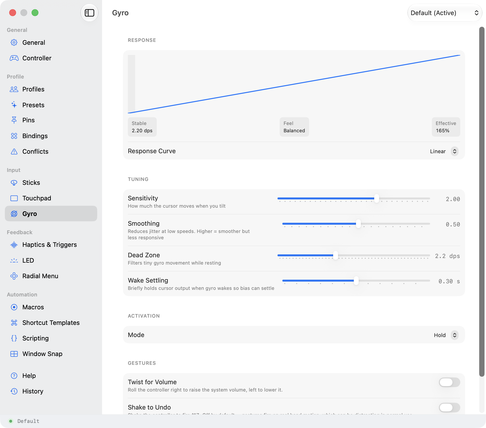
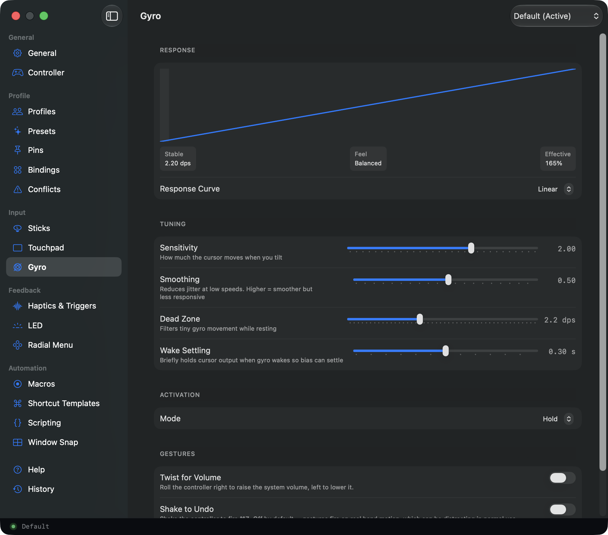

Control your whole Mac
with a game controller.
Point, click, type, and scroll from the couch, from bed, or with one hand. Almost any controller works.
Own a controller? You're set. If not, almost any second-hand one will do.
- One stick points, the other scrolls
- Any shortcut, app, or saved task
- Hold one button: the others change
- Triggers push back before the click
- A quiet buzz when a click lands
- The light strip, any colour you like
- One stick points, the other scrolls
- Any shortcut, app, or saved task
- Hold one button: the others change
- Two buttons at once: one more job
- A quiet buzz on every click
- One stick points, the other scrolls
- Any shortcut, app, or saved task
- Hold one button: the others change
- Tilt it and the cursor follows
- A small, detailed buzz on clicks
- One stick points, the other scrolls
- Any shortcut, app, or saved task
- Hold one button: the others change
- Tap or hold: two jobs per button
Browse, write, edit, present. From anywhere in the room.
A game controller is built to be held for hours, with your thumbs already resting on the buttons. Steer lets those buttons run your Mac, and you decide what each one does, so one small handful covers very different jobs.
Run your whole Mac from the couch.
Browse, type, launch apps, play and pause: from the sofa, the bed, anywhere a mouse won't follow. The stick points from across the room; an on-screen keyboard means you never get up for a search box.
When a mouse hurts, or you only have one hand.
A controller rests in loose hands: nothing to pinch, no fine wrist work, no reaching across the desk. If sore wrists, tremor, pain, or using one hand make a mouse hard, this is a different shape to hold.
Comfort is personal, so the honest test is your own hands. At launch there is a 14-day free trial: no card, no account.
See the accessibility setup →Cut without touching the keyboard.
Scrub the timeline with the triggers, cut under your thumb. The $435 editing console that pro editors buy for this job, running on a controller you already own. (Ready-made for Resolve and Final Cut.)
Switch scenes without a second gadget.
Change scene and mute your mic from the controller already in your hands. The light bar even doubles as an on-air light.
Point at your slides from the back row.
Advance slides, then point at a chart with the bright dot the stick moves across the screen, without going back to the laptop.
Any app, really. If it takes a keyboard or a mouse, it takes a controller.
The trigger stiffens before it clicks.The click lands in your hands.The buzz answers back. Tilt to move the cursor.Feedback that follows your hardware.
Steer does not just read the controller, it writes back to it. The DualSense triggers stiffen under your finger so you feel the click before it fires, the grip buzzes to confirm an action, and the light bar can mean whatever you want.Steer does not just read the controller, it writes back to it. Your grip buzzes to confirm an action landed: the click, the hold that changed your buttons, the saved task that finished.Steer does not just read the controller, it writes back to it. A finer, more detailed buzz confirms each action, and the cursor follows when you tilt the controller.Steer does not just read the controller, it writes back to it. Where the hardware allows: haptic feedback on controllers that support it, tuned per action.
- Adaptive triggers: feel the click before it fires. Five presets and a fine editor.
- A gentle buzz per action, tuned by strength
- A light bar you set yourself, or wire to signal your workflow
- A gentle buzz per action (the click, the hold that changed your buttons, the saved task that finished), tuned by strength
- A finer buzz: small, precise taps, per action, strength you tune
- Tilt to point: tilt the controller and the cursor follows
- Haptic feedback on controllers that support it: per action, strength you tune


Make any button do anything.
It works the moment you plug in. After that nothing is fixed: pick a button, pick what it should do, and that's the whole job. No code, no setup to finish first.
Layers are Shift, for a controller.
Hold one of the buttons along the top edge and every other button takes a second job, the way Shift turns 1 into an exclamation mark. Steer gives you five of these holds, so a handful of buttons covers a whole day: snap a window into place, run a saved task, pop up a ring of your apps to pick from, without your hands moving. You choose how long the hold has to be.
Real screenshots, captured from the app; no renders, no touch-ups.
Your setup never leaves your Mac. No account, no cloud, no tracking.
Steer needs permission to move your cursor and type: the app can't work without it. So here is exactly what it does with that access, in plain terms. Not a trust badge; the whole answer.
Plain files, on your computer.
Your mappings are plain files you can open, back up, and move. No sign-in, nothing synced.
What you type is never sent anywhere.
Steer goes online for three reasons, and none of them are about what you do on your Mac. It checks your licence key when you enter it, then re-checks that key on launch and about once a day. It looks for an update when you ask. And it fetches a setup only if you paste a link to one. That is the whole list.
Anything risky is shown to you first.
Import someone else's setup and, if a button does more than press a key (opens a web page, runs a script), Steer shows you each one before it applies. You approve it, or it never runs. Scripts run only from your own macOS scripts folder: an import can name one you already installed, never bring its own.
Changes can be undone.
Steer saves a restore point as you edit each settings pane, and keeps a history you can walk back through.
Built on public APIs, and disclosed.
Some of what Steer does, Apple never published a recipe for: real pinch and rotate, and speaking directly to a controller's triggers, rumble, and light bar. Steer works those out from scratch. It never borrows Apple's private internals, only the tools Apple publishes for every developer. The full technical account is in the FAQ, because hiding it would be worse.
Hi, I'm Sean. I build Steer on my own.
I read and reply to every email. If Steer is missing something you need, just ask.
One price. Yours to keep.
- 14-day free trial at launch: no card, no account
- Everything your controller can do
- Free updates as macOS changes
- Direct from the developer, notarized by Apple
Steer is nearly ready. Join the list and I'll email you the day the free trial opens: one message, from me, and your address goes nowhere else.
Built for myself. I use it daily. Sean Floyd